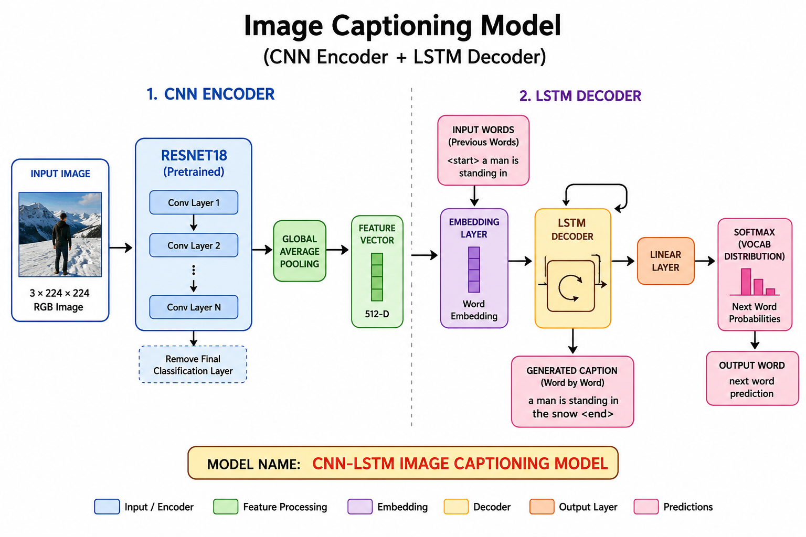

Flickr8k image captioning from scratch
Teaching a neural network to describe images in words
This project builds an image captioning system using a CNN encoder and an LSTM decoder. The CNN understands the image. The LSTM turns that understanding into a sentence, one word at a time.
What is image captioning?
Image captioning is the task of taking an image as input and producing a natural language sentence as output.
For example, if the model sees a person standing in snow, it may generate a caption like "a man is standing in the snow". The difficult part is that the model must learn both visual understanding and sentence generation.
The complete idea in one picture

CNN encoder plus LSTM decoder: image features are used to guide word-by-word caption generation.
Project in simple words
1. The image side
A pretrained ResNet18 CNN reads the image and converts it into a 512-dimensional visual feature vector. The final ImageNet classification layer is removed because we do not want class labels; we want image features.
2. The text side
Each caption is converted into tokens such as <start>, normal words, and <end>.
The LSTM learns how captions flow from one word to the next.
3. The connection
The image feature vector initializes the LSTM hidden state. This means the first word and all later words are generated while remembering what the image contains.
4. The output
At every step, the model predicts a probability distribution over the vocabulary. The word with the highest probability can be selected during inference.
What dataset is used?
The model is trained on the Flickr8k dataset. It contains thousands of real-world images, and each image has human-written captions. The project expects the dataset in this structure:
data/flickr8k/flickr8k/
├── Images/
└── captions.txtDuring training, each image-caption pair becomes a supervised example: the image is the input, and the caption is the target sentence the model tries to learn.
What this blog covers
Architecture
ResNet18 encoder, feature projection, word embedding, LSTM decoder, linear classifier, and greedy decoding.
Read architectureTraining
Dataset download, path setup, vocabulary creation, loss function, checkpoints, logs, and plotting curves.
Read training guideResults
Loss and token accuracy curves, final metrics, overfitting interpretation, and improvement ideas.
Read resultsQuick start
Clone the project, install dependencies, download the dataset, and train.
git clone https://github.com/Lokendra5298/flickr8k-image-captioning-model.git
cd flickr8k-image-captioning-model
pip install -r requirements.txt
python src/download_dataset.py
python src/train.py
After training, the checkpoint is saved at checkpoints/caption_model.pth and the training log is saved at
logs/training_log.csv.